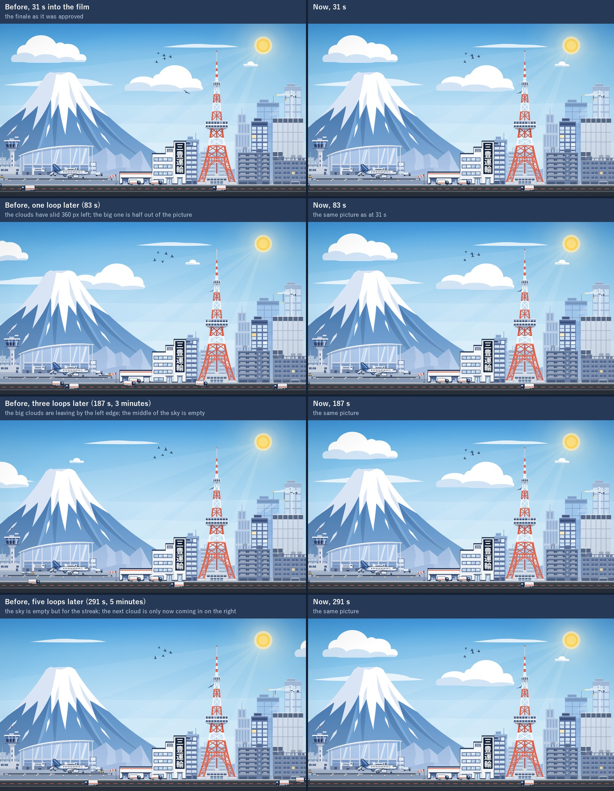
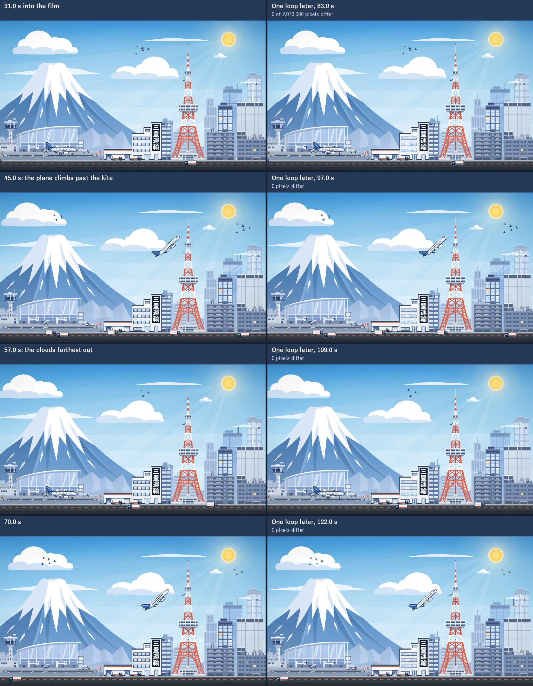
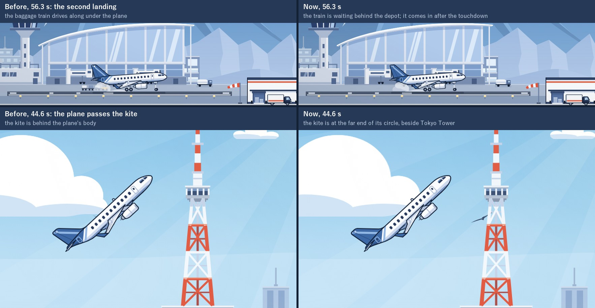
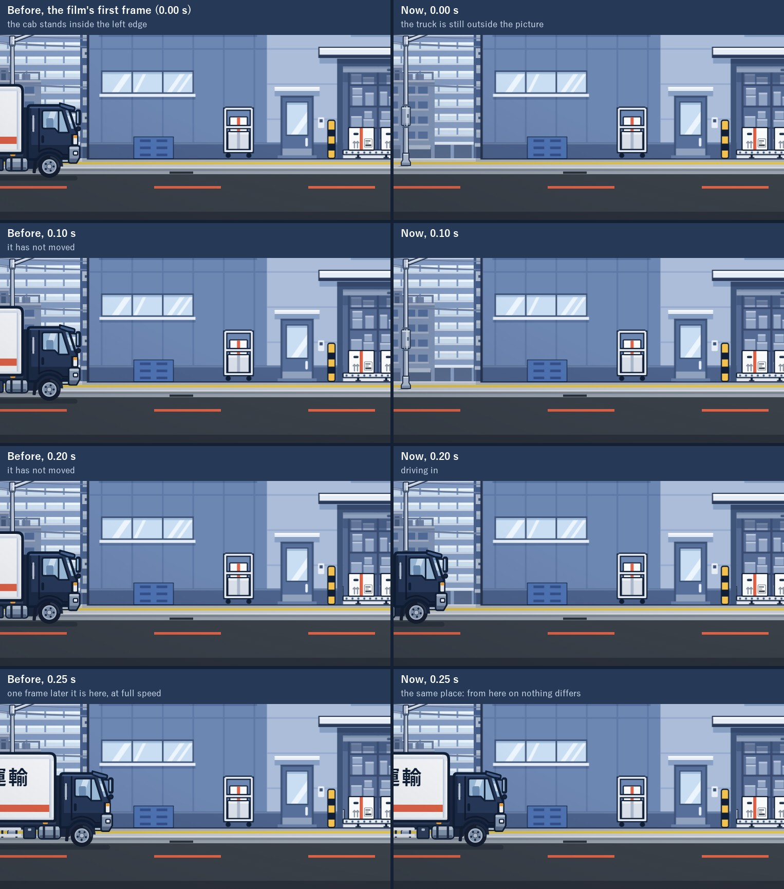

三豊運輸 hero remake: the finale loops, and what was not smooth
Two things were asked for: the last scene should be a complete seamless loop, with the scene buttons still working, and the film should look 60 fps with no jaggedness. This page shows what was found and changed for each.
Every clip can be dragged to any second. The whole film, recorded again with all of this in it, is on the film page.
1. The last scene is a loop
What was there. Nothing brought the last scene back to its start. It simply ran on. A visitor who stayed saw the clouds slide away to the left and nothing come to replace them for five minutes; the road, the baggage train and the kite each kept a round of their own, so the picture never came back to one anybody had looked at.

Now. Every 52 seconds the last scene is back at exactly the same picture, and goes on from there, for as long as anyone stays. Nothing jumps back to make that happen: every moving thing simply goes round a whole number of times in 52 seconds. So there is no join to see.
The proof

- Every frame of two loops, compared piece by piece: at each of 6,240 moments (every 60th of a second for 104 s) every one of the picture's parts is the same as 52 s later.
- The site's real player, left on the last scene for four loops (208 s): the same picture one loop later and four loops later.
- The five scene buttons after those four loops: each one works; going away and coming back lands on the loop. Desktop and phone.
- No pops: the whole film and a further whole loop, 0 frozen steps and 0 pops.
What had to change to make it loop
| What moves | Before | Now |
|---|---|---|
| The plane | every 26 s | Unchanged: two flights a loop. Its path past Tokyo Tower and its speed are as approved. |
| The two flocks | every 52 s | Unchanged. |
| The clouds | drifted one way for ever | Go out and come home once a loop. See below: this one is for you to judge. |
| The road's trucks, the depot's shutter | a round of 38 s | A round of 52 s. The first round, the one in the film you watched, is the same as it was. After it the road is a quarter less busy (the same trucks on a longer round). |
| The baggage train | every 19 s | Once in each of the plane's flights, at the pace it had. It then waits out of sight behind the depot. |
| The kite | 15 s a circle | 13 s a circle, so it is in the same place each time the plane passes. |
| Tokyo Tower's lift | a round trip in 20 s | 26 s: the same ride, a longer wait at each end. |
| Everything small (lamps, glints, cranes, radar, windsock, light shafts) | each on a round of its own | Each moved to the nearest round that fits 52 s. None is more than a few per cent faster or slower. |
Two things that used to meet
Looping the scene would have made two accidents permanent, so both were removed.

The clouds: one thing for you to decide
A cloud that drifts one way for ever cannot be part of a loop. It can only come back by leaving the picture and coming in again on the other side, and at a cloud's pace that takes almost nine minutes. To do it in 52 seconds it would have to cross the sky ten times faster.
So in the last scene the clouds now go out and come home: they drift left as they always did, at the pace they always had, slow to a stop after 26 seconds, and drift back to where they started. For the first 20 seconds, which is all of the last scene you had watched, they move as before.
2. Smoothness
"Not smooth" can mean two different things, so both were hunted: frames that are missing, and motion that is not even although every frame is there. A frame-rate number only sees the first.
What was measured and is sound
- Frames are not being dropped. On a slowed-down phone the remake draws a frame as fast as the original or faster in all five scenes, measured in one sitting (the table is under Checks).
- Nothing moves in steps. Every number the film writes was followed through the whole film, 60 times a second. None is rounded so coarsely that a thing stands still and then hops.
- The browser moves slow things smoothly. A drifting cloud was measured in photographs to a small fraction of a pixel: it glides a tenth of a pixel a frame, never standing still.
What was left were five places where something changed speed, stopped or started in a single frame. They are below.
A lurch as each hold began
Each scene comes in and then holds. The player plays the coming-in 1.2 times as fast as the hold, so everything in a scene ran a fifth faster while it came in and dropped to its own speed in the single frame the hold began. In scene 03 the whole road lost a sixth of its speed in one frame; in the last scene the plane did, in the middle of its landing roll.
| Where | Before | Now |
|---|---|---|
| Scene 03, 16.9 s: the road, the skyline, the wheels | 324 to 270 px/s in one frame | No step: it eases to 270 over a second and a half |
| Scene 04, 24.0 s: a truck on the map | 118 to 97 in one frame | 118, 116, 115 … |
| Scene 05, 30.4 s: the plane rolling out; the trucks | 99 to 79 px/s; 72 to 60 px/s | No step. The first landing is now the same landing as every later one |
Scenes 01 and 02 keep two very small ones (the lift inside Tokyo Tower, and one glint on its glass), listed under Left as it is. The original film has the same fault, larger, in four of its five scenes.
The film's first truck, and the rear doors
Both are in scenes 01 and 02 and both were there before the remake.

The player
The player is the small program on the page that runs the film. These habits came with it from the site's own player, so the original has them too.
Below 60 a second on some screens
It drew 60 pictures a second on a 60 Hz and a 120 Hz screen, but fewer on several common ones, because of how it decided when to draw. It now draws 60 or more on every screen.
| Screen | Pictures a second, before | Now |
|---|---|---|
| 60 Hz | 60 | 60 |
| 72 / 75 Hz | 36 / 37.5 | 72 / 75 |
| 90 Hz (many Android phones) | 45 | 90 |
| 100 Hz | 50 | 100 |
| 120 Hz (your screen runs at 119) | 60 | 60 |
| 144 / 165 Hz | 48 / 55 | 72 / 82.5 |
| 240 Hz | 60 | 80 |
A test browser only has a 60 Hz screen, so these were measured by running the real player on a simulated screen of each rate. A phone that cannot keep up with its own fast screen drops back to a steady slower pace (and no longer flips between two, as a 90 Hz phone could).
The film stood still whenever the page was touched
For a sixth of a second after every click, key press and turn of the mouse wheel, and for as long as the page was being scrolled, the film stopped. That was put in so slow phones answer a tap at once. It is now kept only where drawing really is slow.
| Before | Now, a fast device | Now, a slow device | |
|---|---|---|---|
| Longest stop after a click, a key or a wheel turn | 167 ms | none | 167 ms, as intended |
| While scrolling | stopped throughout | keeps playing | stopped, as intended |
Two smaller ones
- One frame was lost each time a hold began. On a 60 Hz screen the expressway stood still for one frame at 16.9 s. Gone.
- A click on scene 04 in the last moments of scene 03 coming in dropped the road's speed in one frame. Gone.
Checks
- The original's files are intact (7 of 7) and the website was not touched.
- Scenes 01 and 02 are the same as before in every part and at every 60th of a second, except the first truck's first quarter second and the doors.
- The scene changes still play as camera moves, on a desktop and on a phone.
- Clouds: every cloud's underside clears the roofs, also at the far end of its travel; no cloud jumps or outruns its drift.
- Text contrast: every line of copy passes. The two rows for the unfilled progress track fail, as they do on the original (it is the site's bar).
- No part was added to any scene's picture (the number of drawn elements is unchanged).
| Time to draw a frame on a slowed-down phone (middle value; share of frames slower than 60 a second) | Original | Before this round | Now |
|---|---|---|---|
| Scene 01 | 10.7 ms, 0.5 % | 9.9 ms, 0.4 % | 10.4 ms, 0.4 % |
| Scene 02 | 10.3 ms, 3.9 % | 10.1 ms, 0.4 % | 9.7 ms, 0.5 % |
| Scene 03 | 10.5 ms, 3.5 % | 9.8 ms, 2.7 % | 9.8 ms, 2.7 % |
| Scene 04 | 11.3 ms, 3.5 % | 8.9 ms, 1.4 % | 8.8 ms, 1.2 % |
| Scene 05 | 9.5 ms, 0.4 % | 8.7 ms, 0.6 % | 8.3 ms, 0.7 % |
One sitting, the phone framing, the processor slowed four times. Other work was running on the machine, so all three columns are slower than the tables of earlier rounds; compare across a row.
After the work was done, three reviewers went over it independently, each told to find faults: one on the loop, one on everything outside it and the player, one on what still did not move smoothly. The baggage train, the kite, the first truck, the doors and four of the player's points on this page came from them.
Left as it is
- The clouds coming home: yours to judge, above.
- Exhaust puffs flicker behind a truck at full speed (the truck leaving scene 01, the chase into scene 03). They are small and pale and everything is moving fast then.
- The first truck's body bounces as it parks, and the bounce begins abruptly. It is 6 px high and reads as part of the stop.
- Scenes 01 and 02, as their holds begin: the lift inside Tokyo Tower and one glint on its glass change speed a little (18 and 21 px/s). Neither can be seen on a phone.
- Not the film, noted for the other session: the check that compares the real player with the viewer's player fails on some runs at a scene 02 or 03 moment, and did before this work. The pale patch behind the copy is still clearing when its picture is taken.